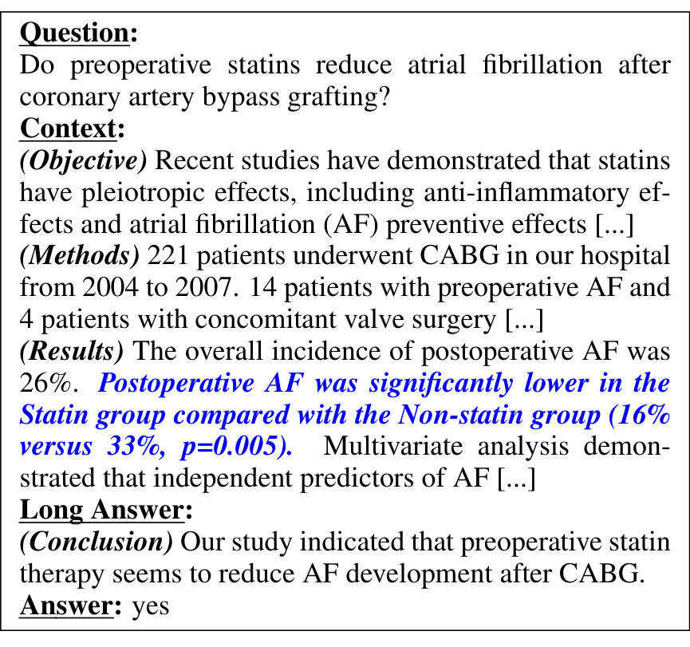

Biomedical QA · Reasoning Benchmark
PubMedQA: A Dataset for Biomedical Research Question Answering
Qiao Jin, Bhuwan Dhingra, Zhengping Liu, William W. Cohen, Xinghua Lu
EMNLP 2019
These slides were generated with the help of AI and may contain errors.
01Motivation
Can models reason over biomedical research text?
The gap
- QA is the standard probe for reasoning, but biomedical QA was small and factoid (BioASQ has <3k).
- Larger auto-built sets ask questions whose answers can be copied from the text, needing little reasoning.
Our aim
- A biomedical QA dataset with expert labels that requires reasoning over the quantitative results in abstracts.
02Task
Answer research questions yes / no / maybe
- Each question is a research-article title; the context is its abstract without the conclusion.
- The model must answer yes / no / maybe by reasoning over the abstract’s quantitative results.

03Dataset
Three subsets: expert, unlabeled & artificial
- Questions are article titles; the context is the abstract with its conclusion removed.
- Labels come from the conclusion — hand-annotated for PQA-L, auto-derived (yes/no) for PQA-A.
1.0k
expert-labeled · PQA-L
61.2k
unlabeled · PQA-U
211.3k
artificial · PQA-A
04Result
Reasoning over quantitative results is hard
05Impact
A foundational benchmark for medical LLMs
06Summary
PubMedQA at a glance
| Background | QA is the standard probe for machine reasoning, but biomedical QA was small and factoid. |
| Problem | No benchmark required reasoning over the quantitative results in research abstracts. |
| Approach | 1k expert + 61.2k unlabeled + 211.3k artificial yes/no/maybe QA from PubMed abstracts. |
| Results | Best model 68.1% vs. 78.0% single-human — a wide reasoning gap. |
| Impact | The default benchmark for open medical LLMs. |